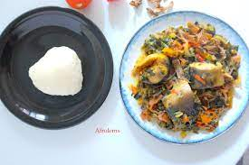

Marghi Special

The Marghi Special Recipe
Marghi special is a Nigerian delicacy indigenous to the Marghi people of Adamawa state and other parts of the Northeastern region of Nigeria.
Ingredients
- 1 big Catfish (Cut into chunks)
- 1 cup of white zobo leaves
- 2 large Tomatoes
- 3 Scotch bonnet peppers
- 1 medium Onion (Chopped)
- 1 small bunch of Green vegetables
- 1 cooking spoon of Palm Oil
- Seasoning Cubes
- Salt
Steps
- Wash your catfish, season and set aside.
- Chop your tomatoes, peppers, green vegetables and onions and set aside.
- Soak the white zobo leaves in hot water for a while, if possible, soak overnight to remove sour taste. Add potash to better remove sour taste.
- Pour the liquid from the soaked zobo into a pot and allow to boil. Add the tomatoes, peppers and onion.
- Pour in the seasoned catfish and allow to cook.
- Add your zobo leaves to the pot and stir.
- Add oil and the chopped vegetables, allow to steam for about a minute or 2.